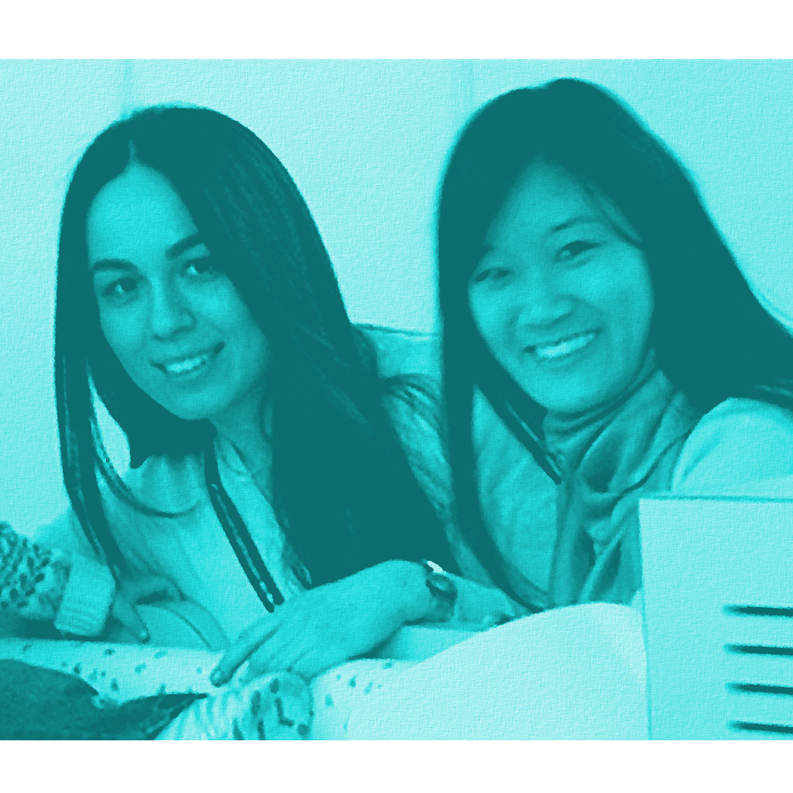
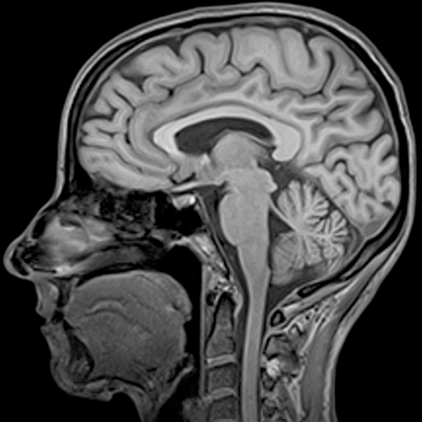

Welcome to the NIRS Team
@ FNNDSC

Who we are
We are the etal Neonatal Neuroimaging and Developmental Science Center (FNNDSC) from Boston Children's Hospital.
We bring together a multidisciplinary team of researchers from the fields of medicine, engineering, computer science, and neuroscience.

What we do
We push the boundaries of research in Magnetic Resonance Imaging (MRI), Magnetoencephalography (MEG), and Near-infrared Spectroscopy (NIRS).
We develop new technologies that can lead to improvements in healthcare for infants and children.